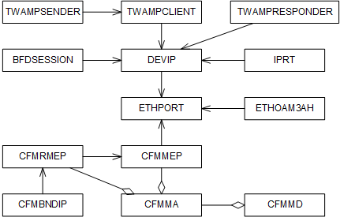
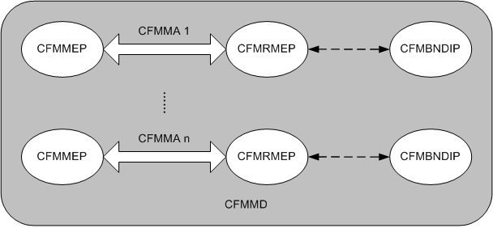
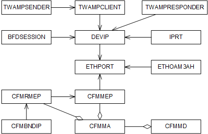
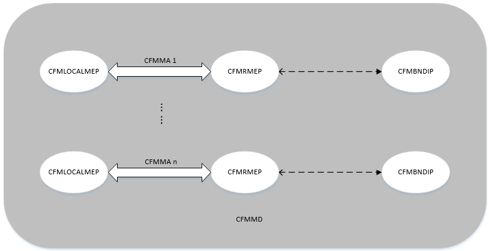

This section describes the functions and concepts of point-to-point
and end-to-end transmission maintenance and test methods. It also
provides the managed object model (MOM) view and describes the managed
objects (MOs) related to transmission maintenance and test.
Functions and Concepts
A base station supports
both point-to-point and end-to-end transmission maintenance and test
methods.
- In point-to-point mode, two NEs are directly connected. A base
station supports the following point-to-point maintenance and test
functions:
- Ethernet OAM (IEEE 802.3ah). OAM is short for operation, administration,
and maintenance.
- Single-hop Bidirectional Forwarding Detection (BFD) sessions of
the maintenance type. This function is used for transmission fault
detection between a base station and a transmission device and mainly
applies to layer 2.
- In end-to-end mode, two NEs are connected through one or more
NEs. A base station supports the following end-to-end maintenance
and test functions:
- Ethernet OAM (IEEE 802.1ag and Y.1731). This function is used
for end-to-end Ethernet maintenance and test.
- Multi-hop BFD sessions of the maintenance type. This function
is used for fault detection between the following NEs and mainly applies
to layer 3: base station and base station; base station and serving
gateway (S-GW); base station and remote transmission device.
- Two-Way Active Measurement Protocol (TWAMP) (RFC 5357): Measurement
packets are automatically inserted to perform an end-to-end test of
the QoS on a transport network. This function is independent of service
packets.
For details on these functions for each RAT, see the corresponding
feature parameter description document.
Managed Object Model
Figure 1 shows the transport layer MOM in the old model, which is
a subset of the base station MOM.
Figure 1 Transport layer MOM in the old model

MOs related to the maintenance and test functions
shown in
Figure 1 are as follows:
- The MO related to Ethernet OAM (IEEE 802.3ah) is ETHOAM3AH.
- MOs related to Ethernet OAM (IEEE 802.1ag and Y.1731) are CFMMEP,
CFMMA, CFMMD, CFMRMEP, and CFMBNDIP.
- MOs related to BFD sessions are IPRT and BFDSESSION.
- MOs related to TWAMP are TWAMPCLIENT, TWAMPSENDER and TWAMPRESPONDER.
Figure 2 shows the relationships between
MOs related to Ethernet OAM (IEEE 802.1ag) in the old model.
Figure 2 Relationships between MOs related to Ethernet OAM (IEEE 802.1ag)
in the old model

A maintenance association (MA) for connectivity
fault management (CFM), defined by the CFMMEP MO, includes a maintenance
association endpoint (MEP) and a remote maintenance association endpoint
(RMEP), which are defined by the CFMMEP and CFMRMEP MOs, respectively.
Route interlock can be implemented by binding an IP address to an
RMEP. A maintenance domain for connectivity fault management (CFMMD)
consists of one or more MAs (CFMMA).
Figure 3 shows the transport layer MOM in the new model, which is a subset
of the base station MOM.
Figure 3 Transport layer MOM in the new model

MOs related to the maintenance and test functions
shown in
Figure 3 are as follows:
- The MO related to Ethernet OAM (IEEE 802.3ah) is ETH3AH.
- MOs related to Ethernet OAM (IEEE 802.1ag and Y.1731) are CFMLOCALMEP,
CFMMA, CFMMD, CFMRMEP, and CFMBNDIP.
- MOs related to BFD sessions are IPROUTE4 and BFD.
- MOs related to TWAMP are TWAMPCLIENT, TWAMPSENDER and TWAMPRESPONDER.
Figure 4 shows the relationships between
MOs related to Ethernet OAM (IEEE 802.1ag) in the new model.
Figure 4 Relationships between MOs related to Ethernet OAM (IEEE 802.1ag)
in the new model

A maintenance association for connectivity fault
management (CFMMA) includes a maintenance association endpoint (CFMLOCALMEP)
and a remote maintenance association endpoint (CFMRMEP). Route interlock
can be implemented by binding an IP address to an RMEP. A maintenance
domain for connectivity fault management (CFMMD) consists of one or
more MAs (CFMMA).
MOs Related to Point-to-Point Maintenance and Test
MOs related to point-to-point maintenance and test are described
as follows, including Ethernet OAM (IEEE 802.3ah) and single-hop BFD
sessions:
The MOs for the data link layer are defined as follows:
- ETHPORT defines an Ethernet
port. This MO includes parameters such as the speed,
duplex mode, port attribute, ARP proxy flag, and MTU. It also includes
information about the loopback status and statistics of received and
transmitted packets. The duplex mode and port attribute must be negotiated
with the peer end.
- ETHOAM3AH/ETH3AH is configured to support link
monitoring, fault detection, and remote loopback as defined in IEEE
802.3ah.
The MO for the network layer is defined as follows:
- IPRT/IPROUTE4 defines a static IP route,
which is used for data forwarding through a routing table. The IPRT/IPROUTE4
MO does not need to be configured if BFD sessions are used for maintenance
and test at layer 2. The IPRT/IPROUTE4 MO must be configured if BFD
sessions are used for maintenance and test at layer 3.
The MOs for the transport and application layers are defined
as follows:
- BFDSESSION/BFD consists of parameters related to
a BFD session, which is used to quickly detect faults on channels
between links. Single-hop BFD sessions are used for point-to-point
maintenance and test at layer 2.
MOs Related to End-to-End Maintenance and Test
The MOs related to end-to-end maintenance and test are described
as follows, including Ethernet OAM (IEEE 802.1ag and Y.1731) and multi-hop
BFD sessions:
The MOs for the data link layer are defined as
follows:
- ETHPORT defines an Ethernet
port. This MO includes parameters such as the speed, duplex mode,
port attribute, ARP proxy flag, and MTU. It also includes information
about the loopback status and statistics of received and transmitted
packets. The duplex mode and port attribute must be negotiated with
the peer end.
- CFMMD defines an MD for CFM
on an Ethernet network. The boundary of each MD is defined by MEPs
on ports. Each MD is identified by an MD name. A CFM MD (CFMMD MO) can be composed of multiple
MAs (CFMMA MO).
- CFMMA defines an MA, which
is a collection of maintenance points in an MD. Each MA is identified
by an MD name and MA name.
- CFMMEP/CFMLOCALMEP defines a local MEP
and CFMRMEP defines an RMEP.
These MOs together define the scope and boundary of an MD. The MD
and MA to which the local MEP belongs determine the VLAN ID and VLAN
priority of the virtual local area network (VLAN) through which packets
are sent.
- CFMBNDIP defines the binding
relationship between an RMEP and an IP address. This MO helps achieve
route interlock for the RMEP.
The MO for the network layer is defined as follows:
- IPRT/IPROUTE4 defines a static IP route,
which is used for data forwarding through a routing table. The IPRT/IPROUTE4
MO does not need to be configured if BFD sessions are used for maintenance
and test at layer 2. The IPRT/IPROUTE4 MO must be configured if BFD
sessions are used for maintenance and test at layer 3.
The MOs for the transport and application layers are defined
as follows:
- BFDSESSION/BFD consists of parameters related to
a BFD session, which is used to quickly detect faults on channels
between links. Single-hop BFD sessions are used for point-to-point
maintenance and test at layer 2.
- TWAMPCLIENT defines
a client for establishing a TCP connection and negotiating the control
information about a test session, such as the DSCP and UDP port number.
- TWAMPSENDER defines
a sender for sending measurement packets and collecting measurement
information.
- TWAMPRESPONDER defines
a responder for responding to TWAMP negotiation packets and TWAMP
measurement packets.